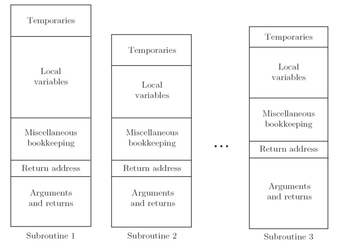
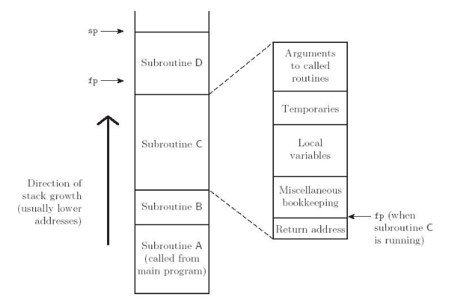
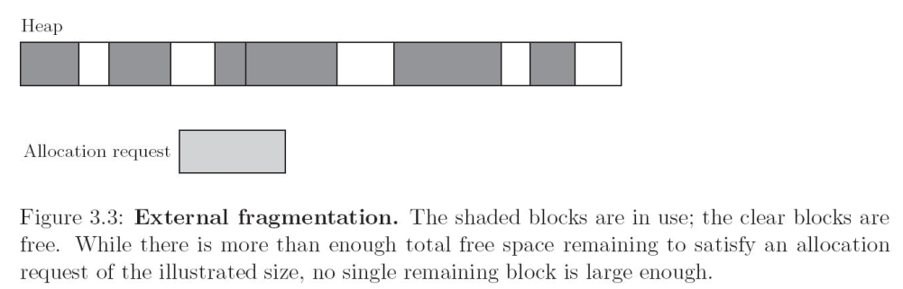
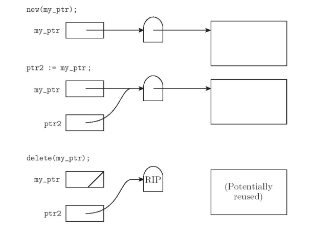
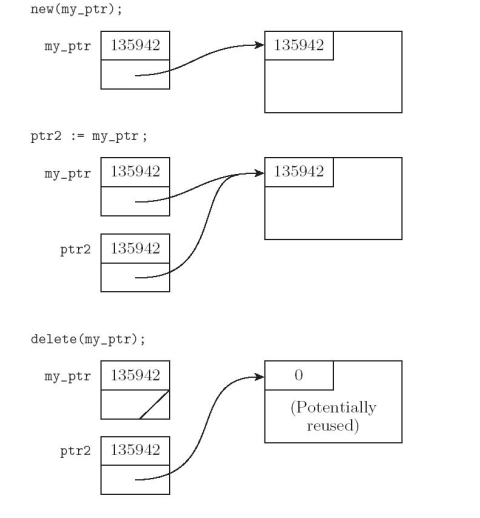
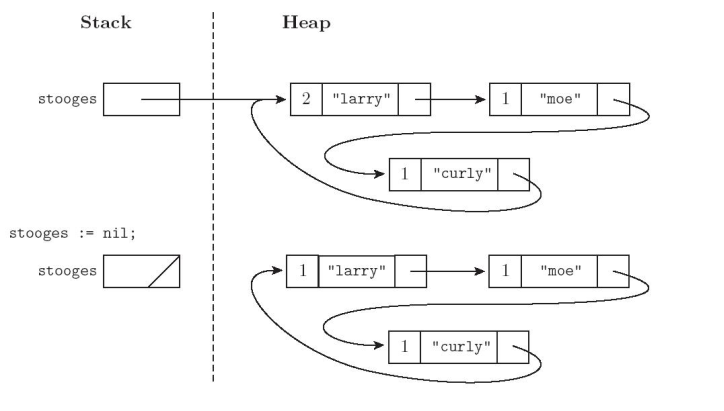

Referencias a variables, subrutinas, tipos, todos los cuales usan
las ligaduras
Desactivación y reactivación de ligaduras que pueden estar
temporariamente en desuso
Destrucción de ligaduras
Destrucción de los objetos
Tiempos de vida distintos
Referencias colgadas
La ligadura sobrevive al objeto
Almacenamiento sin referencias (basura)
El objeto sobrevive a su ligadura
Mecanismos de alojamiento
Estático
A los objetos se les da una dirección absoluta que es retenida a
través de la ejecución del programa
Basado en Pila
Los objetos son alojados y desalojados en un orden LIFO
Heap
Los objetos pueden ser ser alojados y desalojados en momentos
arbitrarios. Requiere algoritmos de administración mas generales y caros.
Alojamiento Estático
Código
Variables Globales
variables static u own
constantes explícitas
tablas de soporte en tiempo de ejecución
Subrutinas

Alojamiento basado en Pila
Pila central para:
parámetros
variables locales
datos temporales
Porqué una Pila?
aloja espacio para rutinas recursivas (no necesario en FORTRAN sin recursión)
reuso del espacio (En todos los lenguajes)
Subrutinas

Alojamiento basado en Pila
Contenido de un Registro de Activación
Argumentos y Resultado
variables locales
Datos temporales
Datos de mantenimiento (registros guardados, número de lineas
estático, links etc)
A las variables locales y Argumentos se les asigna un desplazamiento
FIJO (a partir del puntero de pila o puntero de registro de
activación) en tiempo de compilación.
Alojamiento basado en Pila
El mantenimiento de la Pila es responsabilidad de la secuencia de
llamado del llamador, y de el prologo y el epilogo de la
subrutina llamada.
se ahorra espacio colocando todo lo posible en el prologo y en
el epilogo
se puede ahorrar tiempo
colocando material en el llamador o
combinado lo que es conocido en ambos lugares (optimización interprocedural)
Alojamiento basado en Heap
Alojamiento Dinámico

Alojamiento basado en Heap
Muchas posibles estrategias
compromiso entre espacio y tiempo
Fragmentación
interna (se aloja un bloque que es mas grande que el requerido
para el objeto)
externa (cuando los bloques asignados para los objetos de datos
estan distribuidos en todo el heap de tal modo que el espacio
restante esta compuesto de muchos bloques muy pequeños. Hay
suficiente espacio pero ninguna pieza suficientemente grande para
alojar un nuevo requerimiento.
Alojamiento basado en Heap
Lista ligado de bloques libres
Algoritmos de asignación
First fit selecciona el primer bloque de la lista que es
suficientemente grande para satisfacer el requerimiento.
Best fit busca la lista entera para encontrar el bloque mas
chico suficientemente grande para alojar el objeto
Varias listas libres separadas por tamaño. La división puede ser
estática o dinámica
Buddy System
potencia de 2. si un bloque de \(2^k\) se necesita y ninguno es
diponible se divide uno de \(2^{k+1}\)
Fibonacci heap
numeros de fibonacci para los tamaños estandars
Alojamiento basado en Heap
El problema de referencias sueltas (dangling) son debidas a
desalojo explícito de objetos del heap
solo en lenguajes con desalojo explícito
desalojo implícito de objetos elaborados
Dos mecanismos de implementación para manejar referencias sueltas:
Lápidas (Tombestones)
Llaves y cerrojos (Locks and Keys)
Alojamiento basado en Heap
Tombstones

Alojamiento basado en Heap
Locks and Keys

Recolección de Basura
garbage collection
esencial en lenguajes funcionales y lógicos
se volvió popular en lenguajes imperativos
Contador de referencias

Trazado de la colección
marcado y barrido (mark and Sweep
El recolector camina a través del heap marcando todo bloque como
"usable" tentativamente
Comenzando de punteros de afuera del heap, recursivamente
explora todos las estructuras de datos ligadas, marcando cada
bloque nuevo descubierto como "usado"
El recolector recorre de nuevo el heap, moviendo todo bloque
aún marcado como "usable" a la lista de bloques libres.